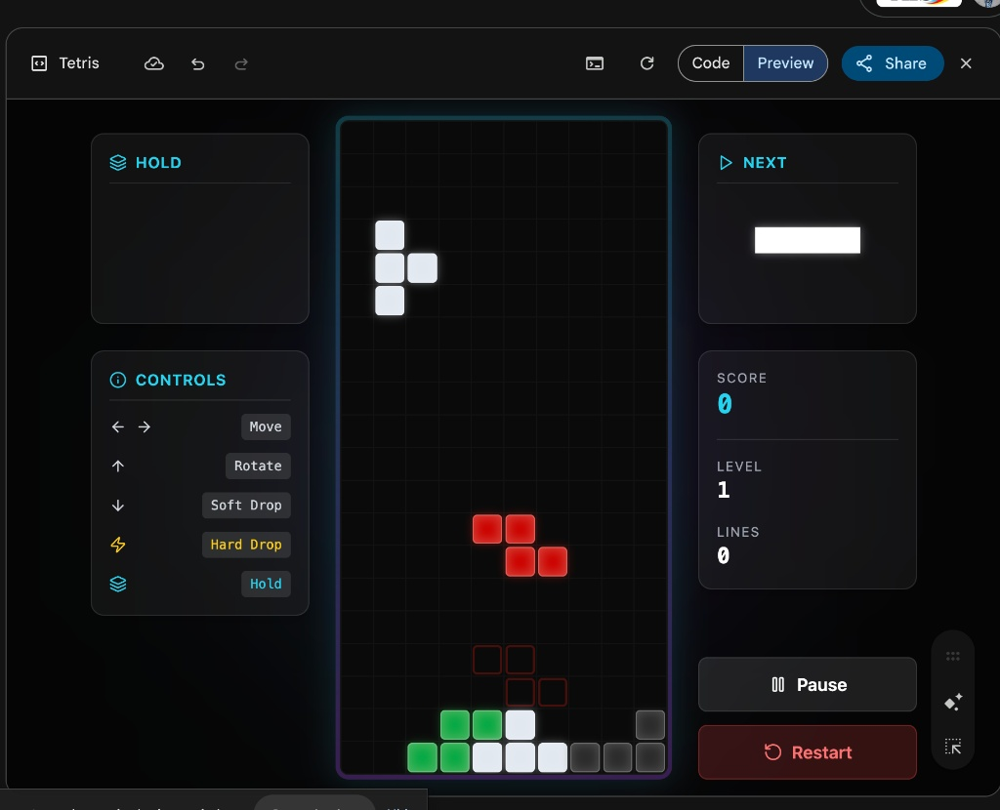

RACE Prompting
I can finish building my colour theme, add sound and add my super power.
I can identify a bug in my game and describe exactly what's not working.
I can develop a RACE prompt to fix the bug and explain why structured RACE prompts make debugging faster.
1. We built the game
We pasted Mr Igor's one-shot prompt into Google Gemini AI Studio and watched the A.I. write the full Tetris game code in about 5 minutes. Every superpower we've added since starts from that base game.
2. We made it our own
We used the RACE framework to make Mr Igor's game our own: changed the theme & colours, added a sound effect, designed a unique superpower feature. ⚠ If you haven't finished yours yet, the first part of THIS lesson is to do exactly that.
Today we finish the game, then learn what debugging means.
Debugging means finding and fixing problems in code. Every coder does it. The A.I. writes bugs too, and we use RACE prompts to fix them.

Mr Igor's game was broken: pressing Space froze the block mid-fall instead of dropping it.
R: You are a game developer.
A: Fix the bug where pressing the Space bar makes the falling block freeze in place instead of dropping it to the bottom.
C: This is a React-based Tetris game where Space is supposed to be the hard-drop key, it should send the current block straight to the lowest possible position and lock it in.
E: When Space is pressed, the block drops instantly to the floor and locks. No more freezing.
...AND I was able to fix it.
🎯 Question: Who can explain how the RACE framework works?
10–15
minutes
to finish your game.
Use your RACE prompts to add the last feature. Make sure it WORKS before time runs out.
Hand up if you get stuck.
Change your Tetris block colours using a RACE prompt.
Add a sound when a row clears using a RACE prompt.
Add a bomb block after 5 rows are cleared.
Debugging means finding and fixing problems in code. Every coder does it. The A.I. writes bugs too, and we use RACE prompts to fix them.
Mr Igor's game was broken: pressing Space froze the block mid-fall.
R: You are a game developer.
A: Fix the bug where Space makes the falling block freeze instead of dropping to the bottom.
C: React-based Tetris where Space is the hard-drop key – it should send the current block straight to the lowest position and lock it in.
E: When Space is pressed, the block drops instantly to the floor and locks. No more freezing.
...AND I was able to fix it.
Remember: PLAN your prompt using R-A-C-E before you type!
Show your friend
your Tetris game.
2minutes
Show the whole class
your Tetris game.
5minutes
Across 4 lessons you built a Tetris game with A.I., levelled it up with RACE prompting, finished it, and learned to debug bugs the same way a real developer would.
Keep levelling up! 🚀
Slide 5: Mr Igor's broken Tetris game (Space-bar bug) — screenshot from Google Gemini Canvas.
Google Gemini is a registered trademark of Google LLC. Tetris is a registered trademark of The Tetris Company.